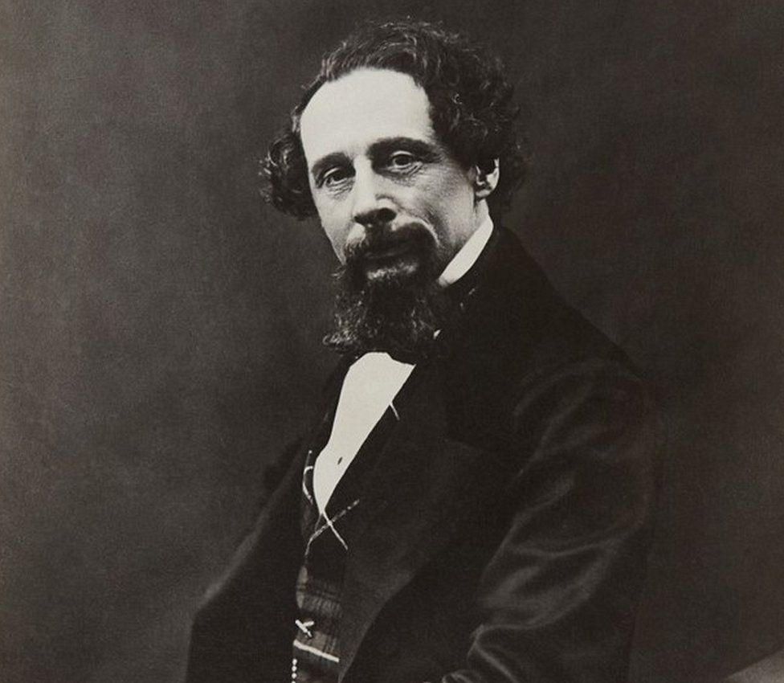
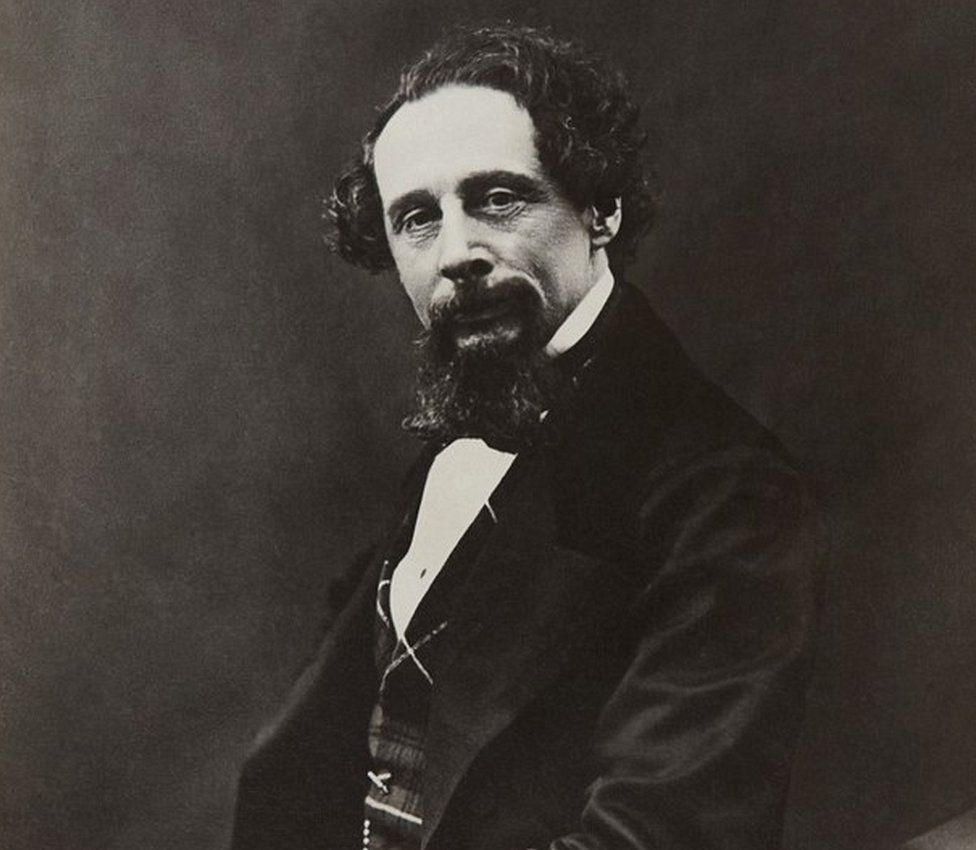

Welcome!
In this page you will find different authors and books, which will entertain you in many different ways!
 

J.K.Rowling
As we all know J.K.Rowling is one of the most popular authors in this world, writing the masterpiece "Harry Potter", by clicking in the link below you will learn her story on how she became famous and also a brief paragraph about one of her books. If you are interested in finding more information please click in the link below:
J.K.RowlingErnest Hemingway
He was noted both for the intense masculinity of his writing and for his adventurous and widely publicized life. His succinct and lucid prose style exerted a powerful influence on American and British fiction in the 20th century. His most known novel is "The Sun Also Rises". If you are interested in his biography and his books, please click in the link below:
Ernest HemingwayWilliam Shakespeare
William Shakespeare was an English playwright, poet and actor, widely regarded as the greatest writer in the English language and the world's greatest dramatist. His many works are about life, love, death, revenge, grief, jealousy, murder, magic and mystery. He is often called England's national poet and the “Bard of Avon”.
William Shakespeare's works are about life, love, death, revenge, grief, jealousy, murder, magic and mystery. He wrote the blockbuster plays of his day - some of his most famous are "Macbeth", "Romeo and Juliet", and "Hamlet". If you are interested in finding more about him and his works, please click in the link below:
William ShakespeareCharles Dickens
Charles John Huffam Dickens was an English writer and social critic. He created some of the world's best-known fictional characters and is regarded by many as the greatest novelist of the Victorian era. His works enjoyed unprecedented popularity during his lifetime and, by the 20th century, critics and scholars had recognised him as a literary genius.
His novels and short stories are widely read today, his writing includes books such as "Oliver Twist" and "A Christmas Carol" - books that are still very widely read today. He wrote about things that many people before him had avoided writing about, like the lives of poorer people. If you are interested in finding more about him and his works, please click in the link below:
Charles DickensMark Twain
Mark Twain was an American writer, humorist, entrepreneur, publisher, and lecturer. He was lauded as the "greatest humorist the United States has produced".
His novels include "The Adventures of Tom Sawyer" and its sequel, "Adventures of Huckleberry Finn", the latter of which has often been called the "Great American Novel". If you are interested in finding more about him and his works, please click in the link below:
Mark TwainF. Scott Fitzgerald
Francis Scott Key Fitzgerald was an American novelist, essayist, short story writer and screenwriter. He was best known for his novels depicting the flamboyance and excess of the Jazz Age—a term he popularized. During his lifetime, he published four novels, four story collections, and 164 short stories. Although he achieved temporary popular success and fortune in the 1920s, Fitzgerald received critical acclaim only after his death and is now widely regarded as one of the greatest American writers of the 20th century.If you want to learn more about his life and works, please click in the link below:
F. Scott FitzgeraldPunuar nga Arlind Kamberi